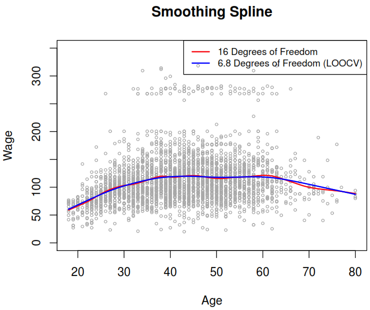
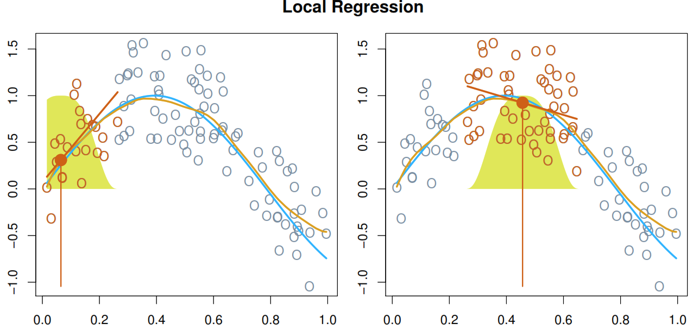

4 Flexible Regression Models
In this book the main goal is to provide more tools to explore the relation of our response and a single predictor, that could be useful when we are are performing an EDA and the extend that power using generalized additive models.
4.1 Based on linear regression
4.1.1 Polynomial regression
It extends the linear model by adding extra predictors, obtained by raising each of the original predictors to a power.
As result, if the response is a numeric variable we can fit our model to follow the next form:
\[ y_i = \beta_0 + \beta_1 x_i + \beta_2 x_i^2 + \beta_3 x_i^3 + \dots + \beta_d x_i^d + \epsilon_i \]

On the other hand, we can use the logistic regression and apply the same structure to predict the probability of particular class:
\[ \Pr(y_i > 250|x_i) = \frac{\exp(\beta_0 + \beta_1 x_i + \beta_2 x_i^2 + \beta_3 x_i^3 + \dots + \beta_d x_i^d)} {1 + \exp(\beta_0 + \beta_1 x_i + \beta_2 x_i^2 + \beta_3 x_i^3 + \dots + \beta_d x_i^d)} \]

4.1.2 Piecewise constant regression
They cut the range of a variable into K distinct regions (known as bins) in order to produce a qualitative variable. This has the effect of fitting a piecewise constant function.
If we define the cutpoints as \(c_1, c_2, \dots, c_K\) in the range of X, we can create dummy variables to represent each range. For example, if \(c_1 \leq x_i < c_2\) is TRUE then \(C_1(x_i) = 1\) and then we need to repeat that process for each value of \(X\) and range. As result we can fit a lineal regression based on the new variables.
\[ y_i = \beta_0 + \beta_1 C_1(x_i) + \beta_2 C_2(x_i) \dots + \beta_K C_K(x_i) + \epsilon_i \]

On the other hand, we can use the logistic regression and apply the same structure to predict the probability of particular class:
\[ \Pr(y_i > 250|x_i) = \frac{\exp(\beta_0 + \beta_1 C_1(x_i) + \beta_2 C_2(x_i) \dots + \beta_K C_K(x_i)} {1 + \exp(\beta_0 + \beta_1 C_1(x_i) + \beta_2 C_2(x_i) \dots + \beta_K C_K(x_i))} \]

4.1.3 Piecewise polynomials regression (Natural Spine)
It consist in fitting separate low-degree polynomials over different regions of X. For example, a piecewise cubic polynomial with a single knot at a point c takes the form.
\[ y_i = \begin{cases} \beta_{01} + \beta_{11} x_i + \beta_{21} x_i^2 + \beta_{31} x_i^3 + \epsilon_i & \text{if } x_i<c\\ \beta_{02} + \beta_{12} x_i + \beta_{22} x_i^2 + \beta_{32} x_i^3 + \epsilon_i & \text{if } x_i \geq c \end{cases} \]
As each polynomial has four parameters, we are using a total of 8 degrees of freedom in fitting that model. By using that model with Wagedata, we can see a problem as the model used was too flexible and to solve it we need to constrain it to be continuous at age = 50.
 But as you could see after applying the continuity constraint the plot still present an unnatural V-shape that can solve by apply the continuity constraint to the first and second derivative of the function, the end with 5 degrees of freedom model.
But as you could see after applying the continuity constraint the plot still present an unnatural V-shape that can solve by apply the continuity constraint to the first and second derivative of the function, the end with 5 degrees of freedom model.

In this context, a natural spline refers to a regression spline with the additional constraints of maintaining linearity at the boundaries.
4.2 Smoothing splines
They arise as a result of minimizing a residual sum of squares criterion subject to a smoothness penalty.
In this method rather than trying to minimize \(\text{RSS} = \sum_{i=1}^n (y_i - g(x_i))^2\), we try to find a function \(g(x)\), known as smoothing spline, which could minimize the following expression based on the \(\lambda\) nonnegative tuning parameter.
\[ \underbrace{\sum_{i=1}^n (y_i - g(x_i))^2 }_{\text{loss function (data fitting)}} + \underbrace{\lambda \int g''(t)^2dt}_{\text{penalty term (g varibility)}} \]
The second derivative of \(g(t)\) measure how wiggly is the function near \(t\), where its value is \(0\) when the function is a straight line as a line is perfectly smooth. The we can use integral to get total change in the function \(g'(t)\), over its entire range. As consequence, the larger the value of \(\mathbf{\lambda}\) , the smoother \(\mathbf{g}\) will be.
The function \(g(x)\) is a natural cubic spline with knots at \(x_1, \dots ,x_n\). As results the effective degrees of freedom (\(df_{\lambda} = \sum_{i=1}^n \{ \mathbf{S}_{\lambda} \}_{ii}\)) are between \(n\) and \(2\) depending on the value of \(\mathbf{\lambda}\).
We can use cross-validation to find the best value which can minimize the RSS. It turns out that the leave one-out cross-validation error (LOOCV) can be computed very efficiently for smoothing splines, with essentially the same cost as computing a single fit, using the following formula:
\[ \text{RSS}_{cv} (\lambda) = \sum_{i = 1}^n (y_i - \hat{g}_\lambda^{(-i)} (x_i))^2 = \sum_{i = 1}^n \left[ \frac{y_i - \hat{g}_{\lambda} (x_i)} {1 - \{ \mathbf{S_{\lambda}} \}_{ii}} \right]^2 \]
Where:
- \(\hat{g}_\lambda^{(-i)}\): Refers to the function fitted without the ith observation \((x_i, y_i)\).
- \(\hat{g}_\lambda\): Refers the smoothing spline function fitted to all of the training observations.

4.3 Local regression
Computes the fit at target point \(x_0\) using only the nearly training observations by:
- Gather the \(s=k/n\) closest (known as span) fraction of points. This step is very important as it controls the flexibility level can be selected using cross-validation*.
- Assign a weight \(K_{i0} = K(x_i, x_0)\) for each selected point based on the distance to \(x_0\). As lower is the distance as higher needs to be the weight.
- Find the coefficients which minimize the weighted least squares regression for the current \(x_0\) value.
\[ \sum_{i=1}^n = K_{i0}(y_i - \beta_0 - \beta_1x_i)^2 \]
- Calculate the fitted value of \(x_0\) using \(\hat{f}(x_0) = \hat{\beta}_0 + \hat{\beta}_1x_0\).
In the next illustration we can see how the model works with some simulated data.

It performs poorly when we have more than 3 or 4 predictors in our model.
4.4 Generalized Additive Models (GAM)
They provide a general framework for extending a standard linear model by allowing non-linear functions of each of the variables, while maintaining additivity.
To transform each predictor we have the next options:
- A constant for each categorical level (step function)
- Polynomial regression
- Natural spines (optimized with least squares)
- Smoothing splines (optimized with backfitting)
- Local regression
Backfitting fits a model involving multiple predictors by repeatedly updating the fit for each predictor in turn, holding the others fixed.
| Pros | Cons |
|---|---|
| 1. It finds relationships that a lineal model would miss without applying many transformations as it can fit a non-linear \(f_j\) to each \(X_j\) 2. We can examine the effect of each predictor on \(Y\) individually as the model is additive. 3. The smoothness of each function \(f_j\) can be summarized via degrees of freedom. |
1. Important interactions can be missed, but they can be added manually |
4.4.1 GAM Regression
To predict a numeric variable this method creates a function with the next form:
\[ y_i = \beta_0 + f_1(x_{i1}) + f_2(x_{i2}) + \dots + f_p(x_{ip}) + \epsilon_i \]
By taking the other predictor as constant we can plot effect of each function for each predictor in the Wage example:

4.4.2 GAM Classification
To predict a categorical variable this method creates a function with the next form:
\[ \log \left( \frac{p(X)}{1-p(X)} \right)= \beta_0 + f_1(x_{i1}) + f_2(x_{i2}) + \dots + f_p(x_{ip}) \]
By taking the other predictor as constant we can plot effect of each function for each predictor in the Wage example: